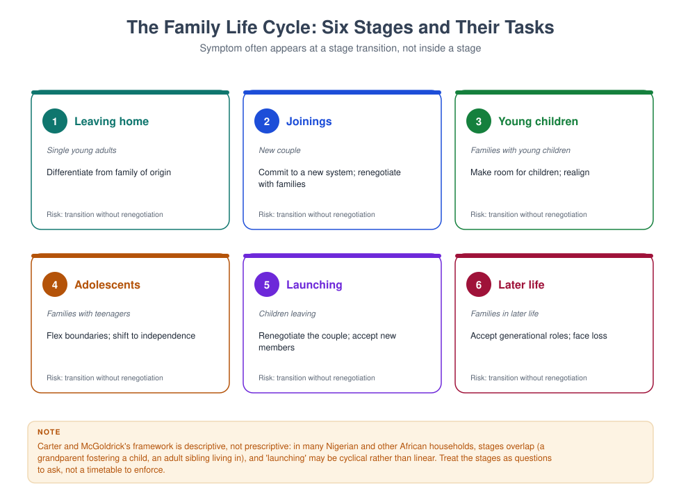
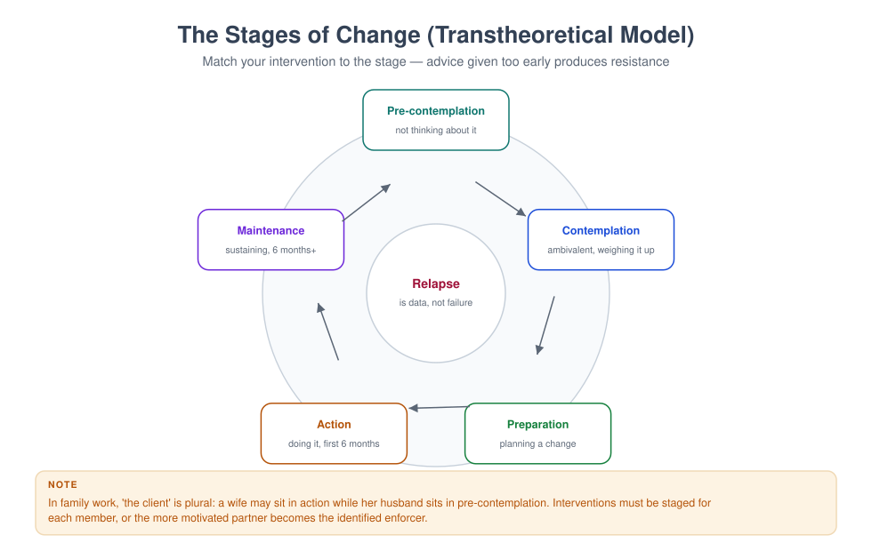
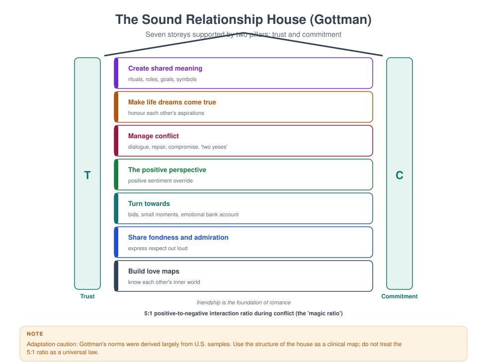
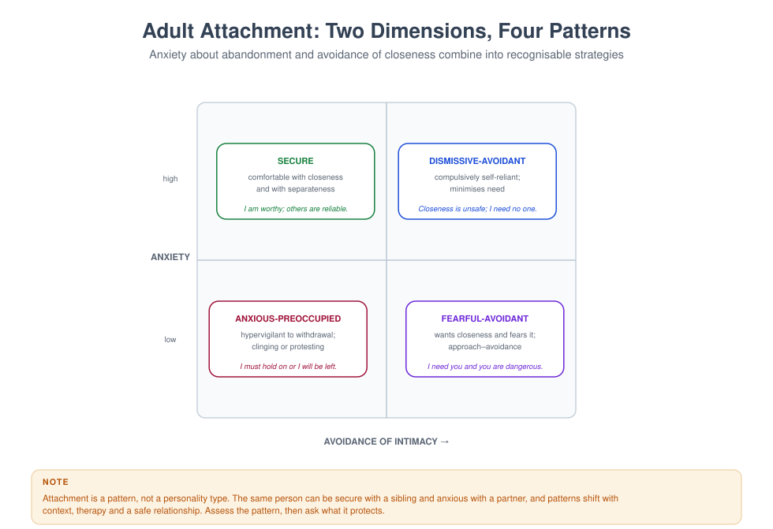
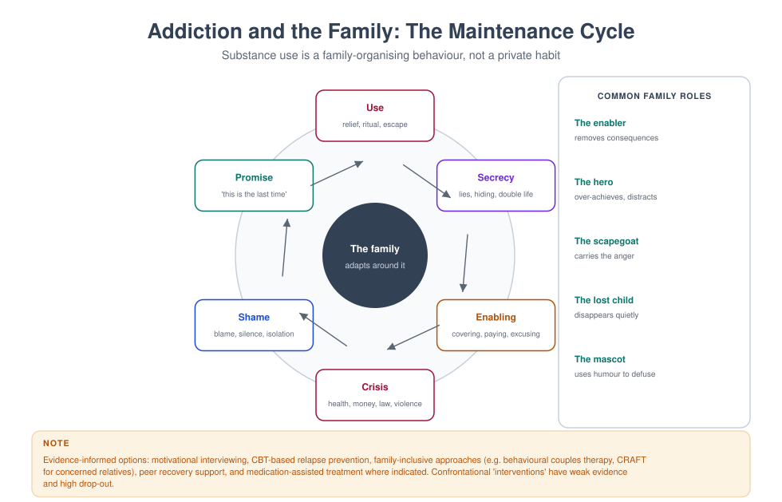
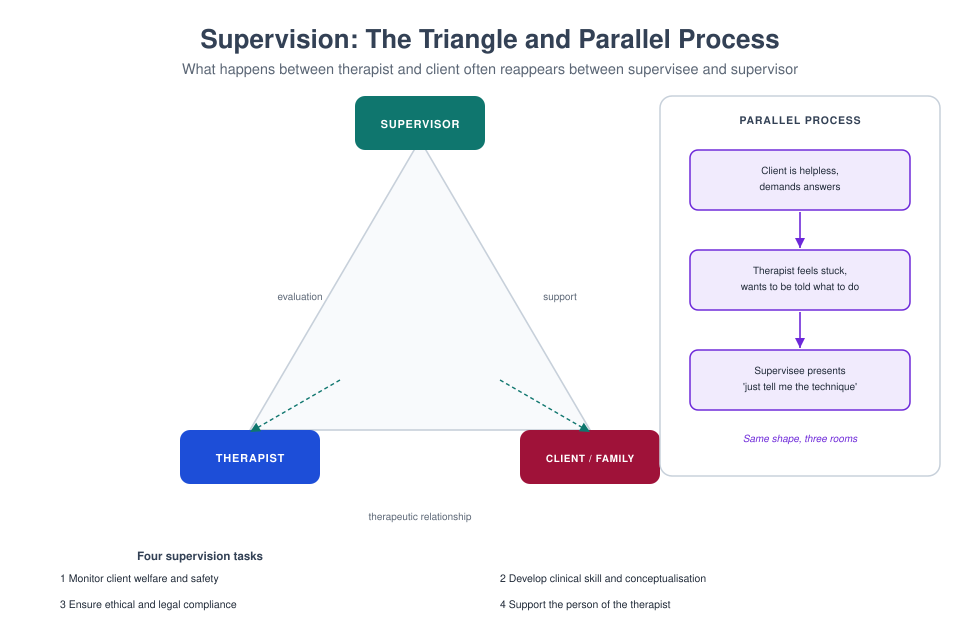

Figure Gallery — All 40 Diagrams
This gallery shows every diagram in the library with a one-line description and the books that use it. The files themselves live in assets/figures/ and can be dropped into slides, handouts or a printed workbook.
Two cybernetics

Where the therapist stands: outside the system (first order) or inside it (second order). MFT 701, 715.
File: assets/figures/fig01-two-cybernetics.svg
Circular causality

The pursue–withdraw loop drawn as a loop, not a blame story. MFT 701, 710, 715.
File: assets/figures/fig02-circular-causality.svg
Genogram symbols

Fifteen standard symbols — the grammar of three-generation mapping. MFT 701, 707.
File: assets/figures/fig03-genogram-symbols.svg
Worked genogram

The Adeyemi family across three generations, with five testable hypotheses. MFT 701, 707, 715.
File: assets/figures/fig04-genogram-case.svg
Structural map

Enmeshed, disengaged and cross-generational coalition structures compared. MFT 702, 715.
File: assets/figures/fig05-structural-map.svg
Bowen's eight concepts

Differentiation at the centre, the other seven arranged around it. MFT 702, 715.
File: assets/figures/fig06-bowen-concepts.svg
Ecological systems

The family inside micro, meso, exo and macro systems, in time. MFT 701, 708.
File: assets/figures/fig07-ecological-systems.svg
Family life cycle

Six stages, their tasks and the risk at each transition. MFT 703, 719.
File: assets/figures/fig08-family-life-cycle.svg
Stages of change

Pre-contemplation to maintenance, with relapse as data. MFT 713, 725.
File: assets/figures/fig09-stages-of-change.svg
Feedback

A thermostat and a family escalation loop — the same logic twice. MFT 701, 715.
File: assets/figures/fig10-feedback-loops.svg
Five axioms

Watzlawick's axioms, each with a concrete family example. MFT 715, 716.
File: assets/figures/fig11-communication-axioms.svg
EFT cycle

Secondary emotion above, attachment need below, and the loop between partners. MFT 710, 718.
File: assets/figures/fig12-eft-cycle.svg
Sound Relationship House

Seven storeys on the pillars of trust and commitment. MFT 710, 718.
File: assets/figures/fig13-sound-relationship-house.svg
Four horsemen

Criticism, contempt, defensiveness and stonewalling, with antidotes. MFT 710, 716.
File: assets/figures/fig14-four-horsemen.svg
Solution-focused session

Strengths, miracle question, scaling, exceptions, task. MFT 702, 706, 725.
File: assets/figures/fig15-sfbt-moves.svg
Narrative therapy

From problem-saturated story to preferred story, in four moves. MFT 702, 716.
File: assets/figures/fig16-narrative-externalising.svg
Attachment patterns

Two dimensions, four patterns, with core beliefs. MFT 710, 718, 726.
File: assets/figures/fig17-attachment-patterns.svg
Window of tolerance

Hyperarousal, the regulated band, hypoarousal — and how trauma narrows it. MFT 712, 714.
File: assets/figures/fig18-window-of-tolerance.svg
Polyvagal ladder

Three survival states with their felt sense and social cues. MFT 714, 726.
File: assets/figures/fig19-polyvagal-ladder.svg
HPA axis

Stress physiology, its target organs, and chronic allostatic load. MFT 714, 726.
File: assets/figures/fig20-hpa-axis.svg
The social brain

Labelled schematic: prefrontal cortex, insula, ACC, amygdala, hippocampus. MFT 726.
File: assets/figures/fig21-social-brain.svg
Dual-process grief

Oscillation between loss-oriented and restoration-oriented living. MFT 712, 719.
File: assets/figures/fig22-dual-process-grief.svg
Developmental milestones

Physical, cognitive, language and social-emotional milestones, 0–18. MFT 703, 711.
File: assets/figures/fig23-developmental-milestones.svg
Playroom plan

A practical floor plan, with sightlines, storage and limit-setting. MFT 711, 727.
File: assets/figures/fig24-playroom-plan.svg
Group stages

Forming to adjourning, with Yalom's factors and the leader's task. MFT 709.
File: assets/figures/fig25-group-stages.svg
Crisis intervention

Roberts' seven stages: lethality first, follow-up last. MFT 712.
File: assets/figures/fig26-crisis-stages.svg
Addiction cycle

Use, secrecy, enabling, crisis, shame, promise — and family roles. MFT 713.
File: assets/figures/fig27-addiction-family-cycle.svg
Choosing a design

Quantitative, qualitative and mixed branches, with an ethics gate. MFT 705, 721.
File: assets/figures/fig28-research-design-tree.svg
Validity and reliability

Four validity targets as dartboards; three reliability methods. MFT 705, 721.
File: assets/figures/fig29-validity-reliability.svg
Assessment sequence

Seven steps from referral to review, with a minimum assessment package. MFT 701, 707.
File: assets/figures/fig30-assessment-sequence.svg
5-P formulation

Presenting, predisposing, precipitating, perpetuating, protective — worked. MFT 707, 717.
File: assets/figures/fig31-five-p-formulation.svg
Supervision triangle

Supervisor, therapist and family — plus parallel process. MFT 720.
File: assets/figures/fig32-supervision-triangle.svg
Ethics decision model

Seven steps, and a checklist for the moment of doubt. MFT 704, 724.
File: assets/figures/fig33-ethics-decision-model.svg
ADDRESSING

Ten cultural positions, each with an interview prompt. MFT 708, 723.
File: assets/figures/fig34-addressing-framework.svg
Speaker–listener

Rules for each role, the floor card, and why structure regulates. MFT 710, 716.
File: assets/figures/fig35-speaker-listener.svg
Eight intimacies

Sex is one spoke, not the wheel. MFT 718.
File: assets/figures/fig36-intimacy-domains.svg
Self-care audit

Eight domains, rated weekly, with warning signs. MFT 722.
File: assets/figures/fig37-self-care-audit.svg
Common factors

What accounts for change, and what that implies for training. MFT 701, 725.
File: assets/figures/fig38-common-factors.svg
Family law map

Four marriage systems, four dissolution questions, one boundary. MFT 704, 724.
File: assets/figures/fig39-family-law-map.svg
Four R's

Realise, recognise, respond, resist re-traumatisation. MFT 714.
File: assets/figures/fig40-trauma-informed.svg